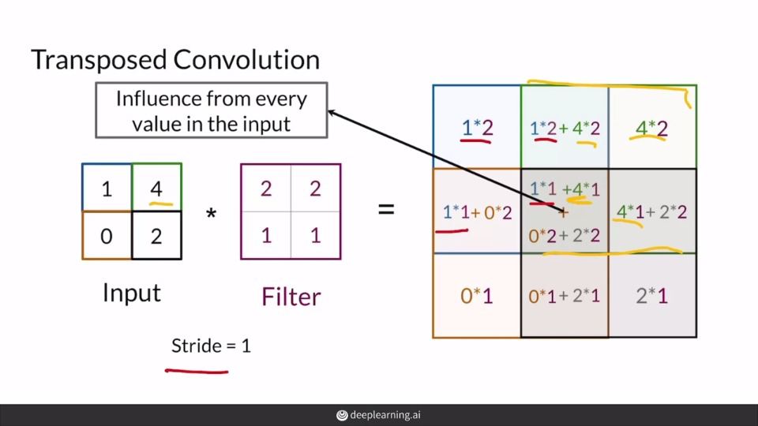

In this week, I learnt how to implement DCGAN and TGA. The code are very helpful due to a lot of suggestions.
There is an very useful interactive blog to illustrate the checkboard effects in transposed convolution. The link is here.
Transposed convolution

Checkboard pattern
Week 2 - Assignment - Deep Convolutional GAN (DCGAN)
Goal
In this notebook, you’re going to create another GAN using the MNIST dataset. You will implement a Deep Convolutional GAN (DCGAN), a very successful and influential GAN model developed in 2015.
Note: here is the paper if you are interested! It might look dense now, but soon you’ll be able to understand many parts of it :)
Learning Objectives
Get hands-on experience making a widely used GAN: Deep Convolutional GAN (DCGAN).
Train a powerful generative model.
Figure: Architectural drawing of a generator from DCGAN from Radford et al (2016).
Getting Started
DCGAN
Here are the main features of DCGAN (don’t worry about memorizing these, you will be guided through the implementation!):
Since in DCGAN the activation function will be different for the output layer, you will need to check what layer is being created. You are supplied with some tests following the code cell so you can see if you’re on the right track!
At the end of the generator class, you are given a forward pass function that takes in a noise vector and generates an image of the output dimension using your neural network. You are also given a function to create a noise vector. These functions are the same as the ones from the last assignment.
# UNQ_C1 (UNIQUE CELL IDENTIFIER, DO NOT EDIT) # GRADED FUNCTION: Generator classGenerator(nn.Module): ''' Generator Class Values: z_dim: the dimension of the noise vector, a scalar im_chan: the number of channels in the images, fitted for the dataset used, a scalar (MNIST is black-and-white, so 1 channel is your default) hidden_dim: the inner dimension, a scalar ''' def__init__(self, z_dim=10, im_chan=1, hidden_dim=64): super(Generator, self).__init__() self.z_dim = z_dim # Build the neural network self.gen = nn.Sequential( self.make_gen_block(z_dim, hidden_dim * 4), self.make_gen_block(hidden_dim * 4, hidden_dim * 2, kernel_size=4, stride=1), self.make_gen_block(hidden_dim * 2, hidden_dim), self.make_gen_block(hidden_dim, im_chan, kernel_size=4, final_layer=True), )
defmake_gen_block(self, input_channels, output_channels, kernel_size=3, stride=2, final_layer=False): ''' Function to return a sequence of operations corresponding to a generator block of DCGAN, corresponding to a transposed convolution, a batchnorm (except for in the last layer), and an activation. Parameters: input_channels: how many channels the input feature representation has output_channels: how many channels the output feature representation should have kernel_size: the size of each convolutional filter, equivalent to (kernel_size, kernel_size) stride: the stride of the convolution final_layer: a boolean, true if it is the final layer and false otherwise (affects activation and batchnorm) '''
# Steps: # 1) Do a transposed convolution using the given parameters. # 2) Do a batchnorm, except for the last layer. # 3) Follow each batchnorm with a ReLU activation. # 4) If its the final layer, use a Tanh activation after the deconvolution.
# Build the neural block ifnot final_layer: return nn.Sequential( #### START CODE HERE #### # step 1 nn.ConvTranspose2d(input_channels, output_channels, kernel_size, stride), # step 2 nn.BatchNorm2d(output_channels), # step 3 nn.ReLU() #### END CODE HERE #### ) else: # Final Layer return nn.Sequential( #### START CODE HERE #### # step 4 nn.ConvTranspose2d(input_channels, output_channels, kernel_size, stride), nn.Tanh() #### END CODE HERE #### )
defunsqueeze_noise(self, noise): ''' Function for completing a forward pass of the generator: Given a noise tensor, returns a copy of that noise with width and height = 1 and channels = z_dim. Parameters: noise: a noise tensor with dimensions (n_samples, z_dim) ''' return noise.view(len(noise), self.z_dim, 1, 1)
defforward(self, noise): ''' Function for completing a forward pass of the generator: Given a noise tensor, returns generated images. Parameters: noise: a noise tensor with dimensions (n_samples, z_dim) ''' x = self.unsqueeze_noise(noise) return self.gen(x)
defget_noise(n_samples, z_dim, device='cpu'): ''' Function for creating noise vectors: Given the dimensions (n_samples, z_dim) creates a tensor of that shape filled with random numbers from the normal distribution. Parameters: n_samples: the number of samples to generate, a scalar z_dim: the dimension of the noise vector, a scalar device: the device type ''' return torch.randn(n_samples, z_dim, device=device)
The second component you need to create is the discriminator.
You will use 3 layers in your discriminator’s neural network. Like with the generator, you will need create the function to create a single neural network block for the discriminator.
# UNQ_C3 (UNIQUE CELL IDENTIFIER, DO NOT EDIT) # GRADED FUNCTION: Discriminator classDiscriminator(nn.Module): ''' Discriminator Class Values: im_chan: the number of channels in the images, fitted for the dataset used, a scalar (MNIST is black-and-white, so 1 channel is your default) hidden_dim: the inner dimension, a scalar ''' def__init__(self, im_chan=1, hidden_dim=16): super(Discriminator, self).__init__() self.disc = nn.Sequential( self.make_disc_block(im_chan, hidden_dim), self.make_disc_block(hidden_dim, hidden_dim * 2), self.make_disc_block(hidden_dim * 2, 1, final_layer=True), )
defmake_disc_block(self, input_channels, output_channels, kernel_size=4, stride=2, final_layer=False): ''' Function to return a sequence of operations corresponding to a discriminator block of DCGAN, corresponding to a convolution, a batchnorm (except for in the last layer), and an activation. Parameters: input_channels: how many channels the input feature representation has output_channels: how many channels the output feature representation should have kernel_size: the size of each convolutional filter, equivalent to (kernel_size, kernel_size) stride: the stride of the convolution final_layer: a boolean, true if it is the final layer and false otherwise (affects activation and batchnorm) ''' # Steps: # 1) Add a convolutional layer using the given parameters. # 2) Do a batchnorm, except for the last layer. # 3) Follow each batchnorm with a LeakyReLU activation with slope 0.2. # Build the neural block ifnot final_layer: return nn.Sequential( #### START CODE HERE #### # # step 1 nn.Conv2d(input_channels, output_channels, kernel_size, stride), # step 2 nn.BatchNorm2d(output_channels), # step 3 nn.LeakyReLU(0.2), #### END CODE HERE #### ) else: # Final Layer return nn.Sequential( #### START CODE HERE #### # nn.Conv2d(input_channels, output_channels, kernel_size, stride), #### END CODE HERE #### )
defforward(self, image): ''' Function for completing a forward pass of the discriminator: Given an image tensor, returns a 1-dimension tensor representing fake/real. Parameters: image: a flattened image tensor with dimension (im_dim) ''' disc_pred = self.disc(image) return disc_pred.view(len(disc_pred), -1)
# UNQ_C4 (UNIQUE CELL IDENTIFIER, DO NOT EDIT) ''' Test your make_disc_block() function ''' num_test = 100
gen = Generator() disc = Discriminator() test_images = gen(get_noise(num_test, gen.z_dim))
# Test the hidden block test_hidden_block = disc.make_disc_block(1, 5, kernel_size=6, stride=3) hidden_output = test_hidden_block(test_images)
# Test the final block test_final_block = disc.make_disc_block(1, 10, kernel_size=2, stride=5, final_layer=True) final_output = test_final_block(test_images)
# Test the whole thing: disc_output = disc(test_images)
criterion = nn.BCEWithLogitsLoss() z_dim = 64 display_step = 500 batch_size = 128 # A learning rate of 0.0002 works well on DCGAN lr = 0.0002
# These parameters control the optimizer's momentum, which you can read more about here: # https://distill.pub/2017/momentum/ but you don’t need to worry about it for this course! beta_1 = 0.5 beta_2 = 0.999 device = 'cuda'
# You can tranform the image values to be between -1 and 1 (the range of the tanh activation) transform = transforms.Compose([ transforms.ToTensor(), transforms.Normalize((0.5,), (0.5,)), ])
# You initialize the weights to the normal distribution # with mean 0 and standard deviation 0.02 defweights_init(m): ifisinstance(m, nn.Conv2d) orisinstance(m, nn.ConvTranspose2d): torch.nn.init.normal_(m.weight, 0.0, 0.02) ifisinstance(m, nn.BatchNorm2d): torch.nn.init.normal_(m.weight, 0.0, 0.02) torch.nn.init.constant_(m.bias, 0) gen = gen.apply(weights_init) disc = disc.apply(weights_init)
Finally, you can train your GAN! For each epoch, you will process the entire dataset in batches. For every batch, you will update the discriminator and generator. Then, you can see DCGAN’s results!
Here’s roughly the progression you should be expecting. On GPU this takes about 30 seconds per thousand steps. On CPU, this can take about 8 hours per thousand steps. You might notice that in the image of Step 5000, the generator is disproprotionately producing things that look like ones. If the discriminator didn’t learn to detect this imbalance quickly enough, then the generator could just produce more ones. As a result, it may have ended up tricking the discriminator so well that there would be no more improvement, known as mode collapse: